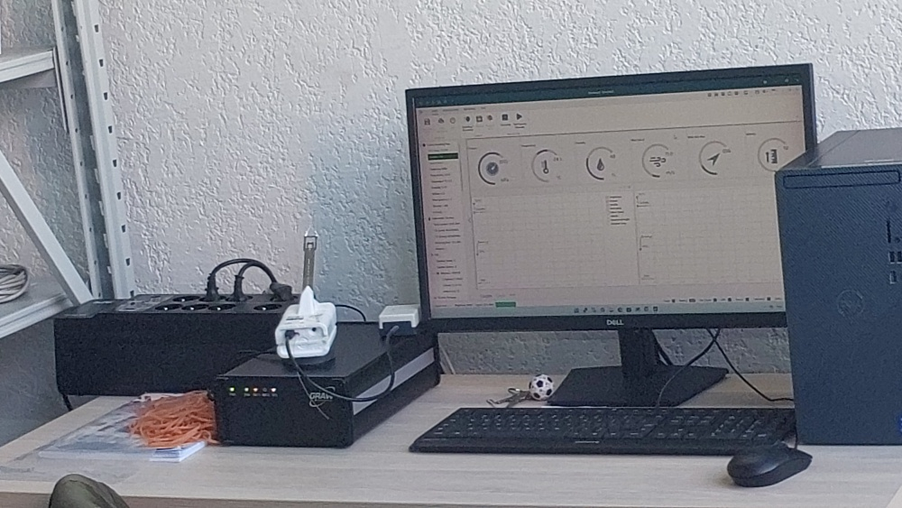
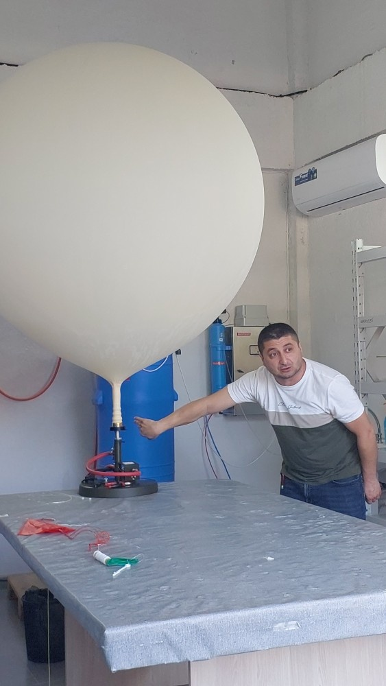
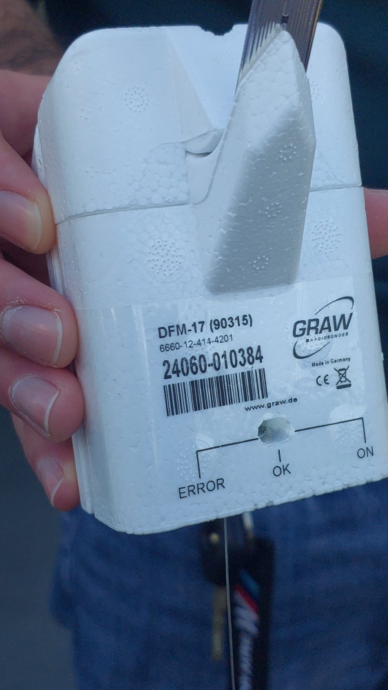
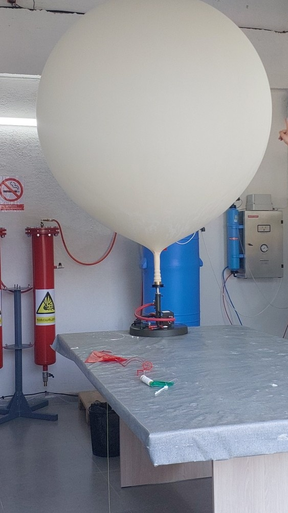

Атмосферное зондирование
Команда «Аналитики»
Тема проекта — шар-зонд и разбор атмосферы по высоте.
«Мы исследуем. Мы измеряем. Мы анализируем. Мы создаём!»
Цель исследования
Главной задачей нашей команды было внимательно проанализировать данные реального запуска радиозонда, сравнить, как меняются параметры воздуха с высотой, и выявить главные природные закономерности.
Методы исследования
Наблюдение за запуском
Сбор телеметрических данных
Изучение графиков
Сравнение показателей
Математические расчёты
Формулирование выводов
Как это было: подготовка и запуск
В лаборатории на рабочем компьютере настроили программу, которая принимает радиосигналы с датчиков. На мониторе сразу были видны давление, температура, влажность, скорость и направление ветра.
На станции следили за ходом измерений и готовили оболочку шара: её наполняли газом до нужного объёма и подъёмной силы.
Рядом стояла система фильтрации газа, а парашют и стропы соединяли шар с радиозондом перед стартом.
После старта давление падало с высотой, температура опускалась до −62 °C, а ветер на индикаторе достигал 19,6 м/с. Эти данные легли в основу итогового анализа.
Галерея




Таблица 1. Сводные результаты запуска
| Величина | Начало | Конец или минимум |
|---|---|---|
| Высота | 0 км | около 29 км |
| Температура | +25 °C | минимум −62 °C |
| Давление | 1015 гПа | 89 гПа |
| Влажность | 44% на графике | 1% на графике |
| Скорость ветра | отдельные значения на графике | 19,6 м/с на индикаторе |
Показания влажности на графике не стоит считать строгим началом и концом без исходного файла. Скорость 19,6 м/с — отдельное показание индикатора.
Таблица 2. Математический анализ
| Что считаем | Расчёт | Результат |
|---|---|---|
| Изменение температуры | 25 − (−62) | 87 °C |
| Изменение давления | 1015 − 89 | 926 гПа |
| Уменьшение давления | 926 / 1015 × 100% | 91,2% |
| Скорость ветра в км/ч | 19,6 × 3,6 | 70,56 км/ч |
Ветер
Скорость ветра: 19,6 м/с, то есть 19,6 × 3,6 = 70,56 км/ч.
Направление 293° — это западо-северо-запад, сектор WNW.
Выявленные закономерности
С высотой атмосферное давление заметно падает: над зондом остаётся всё меньше воздуха.
Температура снижается до −62 °C, а затем поднимается примерно до −50 °C.
Относительная влажность меняется по пути вверх. На графике видны значения от 1% до 44%.
Скорость и направление ветра показывают, как движутся воздушные массы на разных слоях.
Атмосфера неоднородна. Графики показывают ход изменений, а расчёты дают им точную величину. Разбор экспериментальных данных — обязательная часть исследования.
Текст выступления
Нажмите кнопку у пункта, когда дойдёте до него на докладе.
1. Что мы анализировали?
2. Какие закономерности мы обнаружили?
- При увеличении высоты атмосферное давление уменьшается.
- Температура сначала понижается примерно до −62 °C, а затем начинает повышаться.
- Влажность изменяется неравномерно.
- На экране прибора были скорость ветра 19,6 м/с и направление 293°.
3. Какой результат удивил больше всего?
4. Можно ли сделать вывод о состоянии атмосферы?
5. Почему важен такой эксперимент?
Команда «Аналитики» · Проект «Атмосферное зондирование»